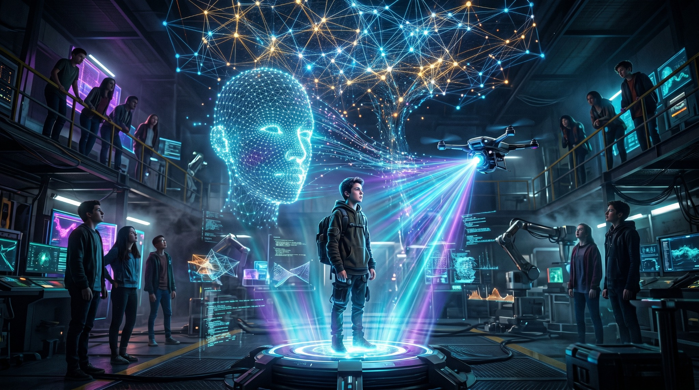
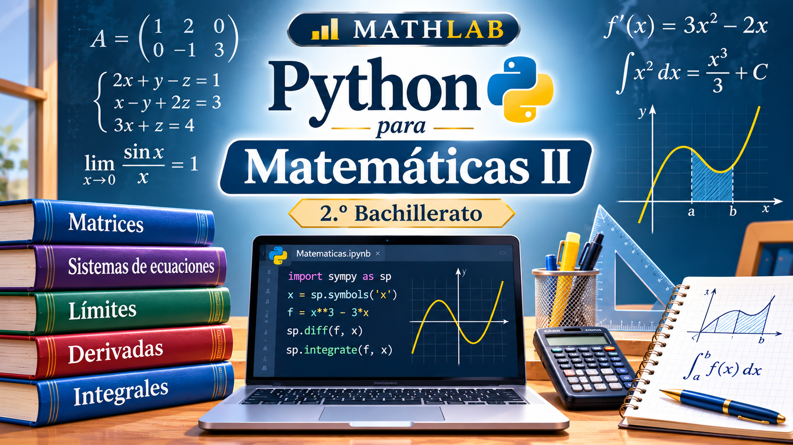
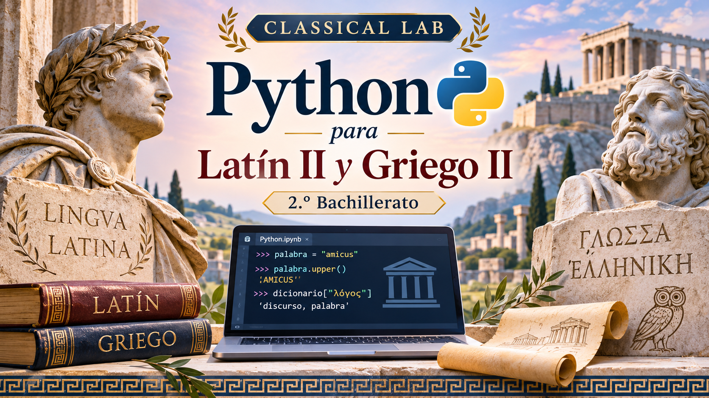

Aprende Python
programando
Selecciona tu itinerario
Haz clic en una tarjeta para comenzar
01

Visión artificial · IA
Reconocimiento Facial con Python
Explora la visión artificial y descubre cómo un programa puede detectar y reconocer rostros.
Acceder al curso
02

Humanidades · Lenguas clásicas
Python para Latín II y Griego II
Utiliza Python para explorar palabras, vocabulario y contenidos de las lenguas clásicas.
Abrir práctica en Google Colab
03

Ciencia · Matemáticas
Python para Matemáticas II
Resuelve y visualiza problemas de matrices, sistemas, límites y derivadas con código.
Abrir práctica en Google Colab